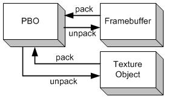

- Allows pixel data to be stored in the device memory for further intra-GPU transfer
- GL_ARB_pixel_buffer_object
Can be considered as an extension of VBO. But instead of storing vertex data, it stores pixel data. Pixel data can be managed more efficiently via PBO
PBO,即Pixel Buffer Object也是用于GPU的扩展（ARB_vertex_buffer_object）。这里的缓存当然就是GPU的缓存。PBO与VBO扩展类似，只不过它存储的是像素数据而不是顶点数据。PBO借用了VBO框架和所有API函数形式，并加了上两个"target"标志。这两个标识是：
这里的“pack”还是“unpack”，可分别理解为“传给”和“得到”。它们也都可以统一理解为“拷贝”，也就是像素数据的“传递”。比如说，glReadPixel就是数据从帧缓存（framebuffer）到内存（memory），可理解为“pack”；glDrawPixel是从内存到帧缓存，可理解为“unpack”；glGetTexImage是从纹理对象到内存，可理解为“pack”；glTexImage2d从内存（memory）到纹理对象（texture object），可理解为“unpack”。
下图是PBO与Framebuffer和Text对象之间的传递。
使用PBO的好处是快速的像素数据传递，它采用了一种叫DMA（Direct Memory Access）的技术，无需CPU介入。另一个PBO的优点是，这种DMA是异步的。我们可以通过下面两张图来比较使用PBO的与传统的纹理传递的过程。
图2是用传统的方法从图像源（如图像文件或视频）载入图像数据到纹理对象的过程。像素数据首先存到系统内存中，接着使用glTexImage2D将数据从系统内存拷贝到纹理对象。包含的两个子过程均需要有CPU执行。而从图3中，我们可以看到像素数据直接载入到PBO中，这个过程仍需要CPU来执行，但是从数据从PBO到纹理对象的过程则由GPU来执行DMA，而不需要CPU参与。而且opengl可安排异步DMA，不必马上进行像素数据的传递。因此，相比而言，图3中的glTexImage2D立即返回而不是马上执行，这样CPU可以执行其它的操作而不需要等待像素数据传递的结束。
图2 不使用PBO的纹理载入
图3 使用PBO的纹理载入
...Be continued
本文转自保持快乐保持健康博客博客：http://blog.sina.com.cn/s/blog_4062094e0100alvt.html